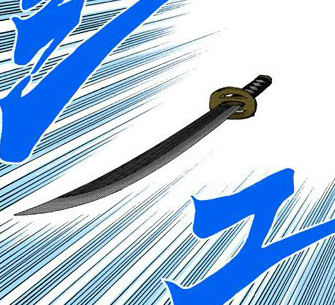
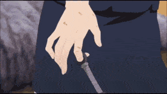
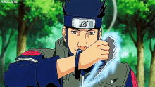
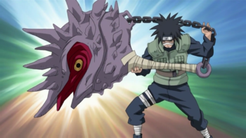
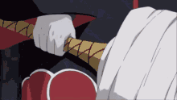
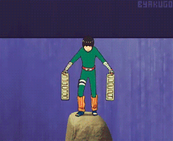
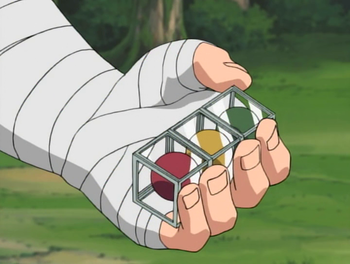

Sword of Kusanagi (Orochimaru)
The Kusanagi Sword is the Kusanagi
of Japanese legend. Orochimaru retrieves his Kusanagi by opening his mouth and extending a snake which then
opens its mouth and produces the sword. Orochimaru was seen producing the sword handle first so he could use it
freely, or blade first to attack his opponent instantly.
The sword can quickly extend and retract its blade to attack from long distances, be controlled telekinetically
according to Orochimaru's command, and cut through almost anything. Even Enma, who is able to transform into a
diamond-hard staff, noted that the Kusanagi blade would leave him considerably sore. It should be noted that
Orochimaru's Kusanagi could not pierce Naruto Uzumaki's four-tailed form. The sword has been seen transforming
into a small snake and returning to Orochimaru.
Kunai
Kunai (クナイ, Kunai), like shuriken, are one of the most common tools used by
shinobi. It is a black dagger — about the length of one's hand — with a handle wrapped in bandages and a
ring-like pommel. While usually kept in a shinobi's weapon pouch, they can also be kept on spring-loaded wires
up the user's sleeve.
Kunai generally are designed for thrusting and stabbing, but can be thrown as a projectile as well. Using it as
ranged weapon, shinobi can attach an explosive tag to the blade, causing it to detonate when it reaches near its
target. This use of the weapon is known as an explosive kunai (起爆クナイ, kibaku kunai). Kunai can also be empowered
with chakra, allowing them to be capable of cutting through solid wood and stone.
Chakra Blades
A Chakra Blade (チャクラ刀, Chakura
Tō) is a special-made metal that can be infused through "chakra flow" with elemental chakra or even Yin–Yang
chakra to produce added effects. According to Shikamaru, the blades are able to absorb the chakra type of the
user, and become the origin of a technique for the user.[2]
This type of weaponry was a speciality of Asuma Sarutobi. His particular blades are a uniquely-designed trench
knife worn like brass knuckles, wearing the blades above his knuckles with a zigzag-shape for each knuckle,
giving each blade "teeth". By coupling these knives with his taijutsu, Asuma could strike with devastating
effect, such as taking out nine Otogakure ninja in a matter of seconds. When infused with wind-natured chakra,
they can easily pierce and cut through stone and even metal. The knives' sharpness and effectiveness can also be
maximised if the person has better control of their chakra as seen with how Asuma was training Sora and Naruto
Uzumaki in focusing their wind chakra into their kunai.
Conch Shell Mace
This is a mace-like
weapon used by Kotetsu Hagane, which he stores in a scroll and summons in battle when necessary. It resembles a
conch shell with numerous sharp protrusions all over its surface and a marking in the centre that resembles an
eye. Its hilt is wrapped in bandages, and a chain connects the mace to the base of the hilt. Kotetsu has been
shown using it in combination with Izumo's Water Release: Starch Syrup Capturing Field that immobilises the
targets' feet, making it easier to land an attack on them.
In the anime, it was shown that the protrusions on the mace can spread or integrate to form wing-like appendages
that enable it to soar into the sky and evade attacks from the opponent. Even while separated, Kotetsu seems to
be able to retain control of the mace's trajectory through the use of hand gestures. While it is underground, it
can assume a form that has its protrusions folded against itself (likely to make it easier for it to move
underground).
Shuriken
 Shuriken (手裏剣, Shuriken), like
kunai, are one of the more basic weapons seen in the Naruto series. They are sharpened, four-pronged metal
stars, useful for throwing. They can also be used for close combat, but not very efficiently. Although small,
they can be used to distract, pin down enemy shinobi, or, if accurate enough, kill or incapacitate an enemy.
They have an open circle in the centre, useful for grabbing with a finger, to avoid cutting oneself, or to put
thread through. The circle is also beneficial to the weapon's overall aerodynamics, ensuring more accurate
trajectories.
Shuriken (手裏剣, Shuriken), like
kunai, are one of the more basic weapons seen in the Naruto series. They are sharpened, four-pronged metal
stars, useful for throwing. They can also be used for close combat, but not very efficiently. Although small,
they can be used to distract, pin down enemy shinobi, or, if accurate enough, kill or incapacitate an enemy.
They have an open circle in the centre, useful for grabbing with a finger, to avoid cutting oneself, or to put
thread through. The circle is also beneficial to the weapon's overall aerodynamics, ensuring more accurate
trajectories.
Samehada
Samehada (鮫肌, Literally meaning:
Shark Skin) is a sentient sword utilised by the Seven Ninja Swordsmen of the Mist, and is regarded as the most
terrifying out of all the Seven Swordsmen's blades.
Passed down from generation to generation since the First Mizukage's era in Kirigakure, Samehada was eventually
acquired by Fuguki Suikazan, and at some point, the sword was utilised by Mangetsu Hōzuki in his act of
mastering all seven swords of the Seven Swordsmen. Upon Fuguki being killed by his subordinate, Kisame
Hoshigaki, he took the sword and joined the Seven Ninja Swordsmen. For the duration of Samehada being in his
possession, their chakra signatures eventually became identical, and Kisame became regarded as a "Tailed Beast
without a Tail" (尾を持たない尾獣, O o Motanai Bijū, English TV: Tailless Tailed Beast). When Kisame became a
Missing-nin, he took Samehada with him.
Weights
A weight (重り, omori) is a heavy
object used for training by weighing down the user. Rock Lee wears a pair of ankle weights with the kanji,
meaning "guts" (根性, konjō), written on them. During the Chūnin Exams, Might Guy told Lee to remove them while
facing Gaara, which resulted in his speed being increased substantially. The weights are heavy enough to leave a
small crater on the floor.
Three Coloured Pills
The Three Coloured Pills are secret medicines used by the Akimichi clan. As the
name suggests, there are three pills, each with a different colour. First is the green Spinach Pill (ホウレン丸,
Hōrengan), next is the yellow Curry Pill (カレー丸, Karēgan), and last is the red Chilli Pill (トンガラシ丸,
Tongarashigan).
By forcibly converting the body's fat reserves into chakra, each successive pill ingested gives a tremendous
power boost. The Chilli Pill is even said to increase one's power a hundred times. However, the pills have a
drawback. Each pill damages the body, poisoning it, and since the third pill converts all of one's fat reserves,
the user will become dangerously emaciated. It is said that after the third pill, death is imminent. However,
the Nara clan has apparently done extensive research on the pills, and that knowledge allowed the Fifth Hokage
to neutralise the poison and repair the damage to Chōji Akimichi, after he took all three pills to fight and
kill Jirōbō. The pills allow for easier use of the Akimichi clan's calorie control.
>Home Page